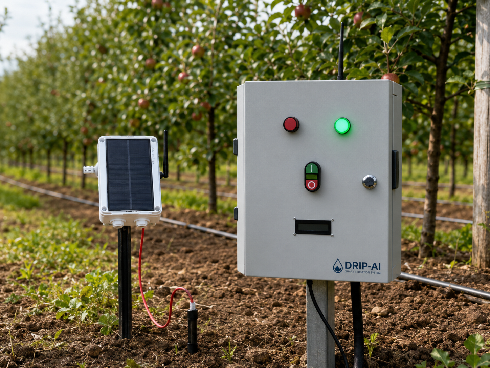

0% gachasuvni tejash imkoniyati
Har bir tomchini aqlli qarorga aylantiramiz!
DRIP AI — IoT datchiklari, SX1278 LoRa aloqa va sun’iy intellekt yordamida suv resurslarini samarali boshqarish hamda sug‘orishni avtomatlashtirish platformasi.
Real prototip
Real-vaqt monitoring
Masofaviy boshqaruv

DRIP AI MVP prototipi
0% gachaelektrni tejash imkoniyati
0% gachahosildorlik oshishi mumkin
24/7real-vaqt monitoring
Muammo → Yechim
Taxminiy sug‘orishdan aniq boshqaruvga
Bugungi muammo
Ko‘rinmayotgan sarf, kechikayotgan qaror
- Tuproq namligi real vaqtda o‘lchanmaydi
- Qarorlar ko‘pincha taxmin asosida olinadi
- Ortiqcha suv va elektr energiyasi sarfi
- Inson omiliga yuqori bog‘liqlik
- Dala ma’lumotlari markazlashmagan
- Masofaviy monitoring cheklangan
Hozirgi yechim
Ma’lumotga tayangan aqlli sug‘orish
- IoT datchiklari bilan real-vaqt monitoring
- SX1278 LoRa orqali 10 kmgacha uzoq masofali aloqa
- Gateway va MQTT orqali serverga uzatish
- Aloqa uzilganda ham lokal boshqaruv
- AI asosidagi tahlil va tavsiyalar
- Zonalar bo‘yicha avtomatik boshqaruv
- Web/Mobil platformadan masofaviy nazorat
Tizim arxitekturasi
DRIP AI qanday ishlaydi?
Daladan kelgan signal bir necha soniyada tushunarli qaror va amaliy boshqaruvga aylanadi.
01DatchiklarNamlik · pH ·
iqlim
02ESP32Signalni
yig‘ish
03SX1278
LoRaUzoq masofali aloqa
04GatewayMQTT
uzatish
05Server +
AITahlil va qaror
06BoshqaruvRelay ·
Pump · Valve
Tuproq namligi
Harorat
Havo namligi
pH
Suv sathi
Suv sarfi
Texnologiyalar
Daladan cloudgacha — bitta ekotizim
Modulli arxitektura mavjud MVP’ni yangi datchiklar, zonalar va xo‘jaliklar bilan kengaytirishga yordam beradi.
Field Intelligence
Dala sharoitini o‘lchash va sug‘orish qurilmalarini boshqarish uchun ishonchli modullar.
Data Infrastructure
Telemetriya, boshqaruv buyruqlari va tarixiy ma’lumotlarni qayta ishlovchi server qatlami.
Control Experience
Holatni ko‘rish, zonalarni nazorat qilish va tezkor qaror olish uchun responsive interfeys.
Decision Intelligence
Eksperimental tahlil, tavsiya va kelajakdagi avtomatik qaror mexanizmlari.
Bizning ustunligimiz
Nima uchun DRIP AI jamoasi bu muammoni hal qila oladi?
Real Prototip
Bu faqat g‘oya emas. Qurilma va web-platformaning ishlaydigan prototipi mavjud.
Full-stack
Hardware’dan web-platformagacha bo‘lgan to‘liq texnologik zanjir ishlab chiqilgan.
Dala yo‘nalishi
Tizim real qishloq xo‘jaligi sharoitida qo‘llash uchun ishlab chiqilmoqda.
IoT + AI
Datchik ma’lumotlari, boshqaruv va AI yagona platformada birlashtirilgan.
Masshtablashtirish
Kichik maydondan katta fermer xo‘jaligigacha kengaytiriladigan arxitektura.
Sun'iy Intellekt
Ma’lumotni aqlli tavsiyaga aylantiradi
DRIP AI datchiklardan kelayotgan ma’lumotlarni tahlil qilib, sug‘orish jarayoni uchun tavsiya va avtomatik boshqaruv qarorlarini shakllantirishga mo‘ljallangan.
R&D holatiAI imkoniyatlari
sinov va takomillashtirish bosqichida; tijoriy natija sifatida da’vo qilinmaydi.
decision_engine.pyEXPERIMENTAL
Sensor Data
Processing
AI Analysis
Decision
Control
Artificial Neural Network Fuzzy Logic Rule-based
Decision Optimization
Feedback loop
Har bir siklda aniqlikni yaxshilash
Yo‘l xarita
G‘oyadan dala sinovigacha
MVP ishlayapti. Navbatdagi muhim qadam — real bog‘ sharoitida pilot sinovlarini kengaytirish.
01
G‘oya
Yakunlangan- Muammoni o‘rganish
- Konsepsiya
- Arxitektura
02
Prototip
Yakunlangan- ESP32 va datchiklar
- Rele va ijro mexanizmlar
- Simsiz aloqa
03
MVP
Yakunlangan- Web platforma
- Monitoring
- Manual / Auto rejim
04
Pilot
Jarayonda- Real bog‘ sinovlari
- LoRa datchik tarmog‘i
- AI takomillashtirish
- Mobil ilova ishlab chiqish
05
Ishga tushirish
Keyingi bosqich- Fermer xo‘jaliklari
- Mobil ilova
- Masshtablash
Amalga oshirish
Yechimni qanday amalga oshiramiz?
Ma’lumot yig‘ish
IoT datchiklardan dala va mikroiqlim ma’lumotlarini olish.
Simsiz aloqa
SX1278 LoRa orqali Gateway’ga ma’lumot yuborish.
Cloud
MQTT orqali serverga real-time ma’lumot uzatish.
Data processing
Django, FastAPI va PostgreSQL bilan qayta ishlash.
AI Analysis
ANN, Fuzzy Logic va optimallashtirish orqali tavsiya yaratish.
Auto Control
Rele, kontaktor, nasos va klapanlarni boshqarish.
Jamoa
G‘oyani prototipga aylantirayotgan jamoa
Founder / IoT & AI Developer
Sarvarbek Ismailov
DRIP AI konsepsiyasi, IoT arxitekturasi, backend, AI algoritmlari, hardware integratsiya va smart irrigation avtomatizatsiyasi ustida ishlaydi.
PythonDjangoFastAPIPostgreSQLESP32LoRaMQTTAIAutomation
DRIP AI Demo
IoT va sun’iy intellekt asosida ishlaydigan aqlli sug‘orish tizimining ishlash jarayoni.
Videoda qurilma prototipi, dala datchiklari, simsiz ma’lumot uzatish, monitoring hamda avtomatik yoki masofadan sug‘orishni boshqarish imkoniyati namoyish etilgan.
IoT prototip Datchik monitoring Ijro mexanizmlar nazorati
Web dashboard Real-vaqt ma'lumotlari SI nazorat konspetsiyasi
Developers / API
Integratsiyaga tayyor arxitektura
Kelajakda tashqi servislar va mobil ilovalarni ulash uchun rejalashtirilgan API arxitekturasi.
Planned API · demo endpointsapi.dripai-tech.uz · architecture
preview
GET /api/v1/sensors/GET /api/v1/zones/GET /api/v1/readings/GET /api/v1/irrigation/status/POST /api/v1/irrigation/start/POST /api/v1/irrigation/stop/
FAQ
Ko‘p so‘raladigan savollar
DRIP AI — IoT datchiklari, SX1278 LoRa aloqa va sun’iy intellekt yordamida
sug‘orishni monitoring va boshqarishga mo‘ljallangan AgriTech platforma.
Oddiy tizim suvni yetkazadi; DRIP AI esa datchik ma’lumotlarini kuzatadi,
zonalarni boshqaradi va ma’lumotga asoslangan tavsiyalar yaratishga yo‘naltirilgan.
Tuproq namligi, havo harorati va namligi, pH, suv sathi hamda suv sarfi
datchiklari arxitekturaga kiritilgan.
Mahalliy boshqaruv ssenariylari internetga bog‘liq bo‘lmagan holda davom
etishi mumkin; masofaviy monitoring va server bilan sinxronlash internet tiklanganda yangilanadi.
SX1278 LoRa kam quvvat sarfi va uzoq masofaga signal uzatish imkoniyati sabab
dala datchik tarmoqlari uchun mos.
Rejalashtirilgan AI qatlami datchiklar va belgilangan qoidalarni tahlil qilib
tavsiya yoki boshqaruv signali shakllantiradi. Bu imkoniyat hozir tajriba va takomillashtirish
bosqichida.
Ishlayotgan prototip
Asosiy Platformani ochish
DRIP AI platformasini hozir ko‘ring
Monitoring, boshqaruv va analitika interfeyslarini real web-platformada ko‘rishingiz mumkin.